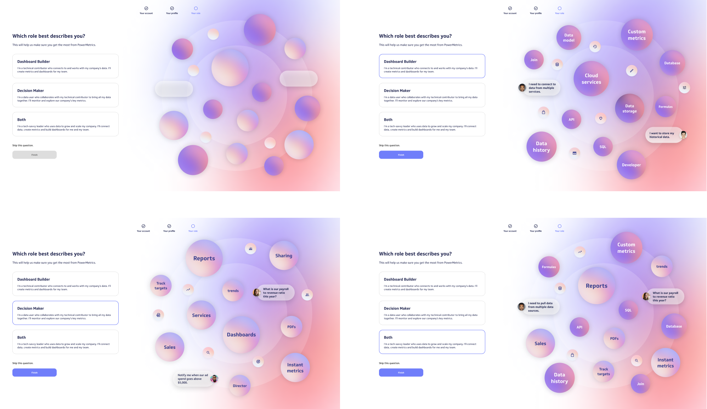

Onboarding
Role
Project Lead
UI/UX Design
Team members
Onboarding team Cross functional team
Nick Venne Developer
Introduction
Onboarding is an important process for products because it helps users quickly and easily learn how to use the product and understand its value. This can improve user retention, reduce support costs, and ultimately drive revenue for the company offering the product.
Onboarding
User onboarding is the process that takes people from perceiving, experiencing, and adopting the product's value to improve their lives. It’s not an about teaching the user about the product but rather how it makes them successful.
Successful user onboarding is the pursue to minimize the user's Time-to-Value (TTV). It’s so important for a product-led world, where users are pressed for time, small tolerance for delays and frustrations.
With that in mind, our first step is to our understand who our users are, how to identify them, and give them value as fast as possible in their user journey.
Identify the personas
Our users are divded into three main categories, builders, decisions makers, or a hybrid of both.


Inferring the personas
The next step is design an experience that can help us infer the user personas
Exploring different options and ways of inferring personas

Options
Option 1: Asking the users to identify themselves based on a collection of key words, actions, and imageries.
Option 2: Asking the users questions where the answers are weighted. Depending on how the user answers, the scale will put them somewhere within the 3 personas.
Redesigning the signing up experience
The following chart shows the user journey of the new sign up experience, and the events firing as part of it.

Scroll to the right to see the full user flow.
Final concept
The three stages of the sign up flow.
The profile page consist of 4 main questions, first name, last name, company name, and time zone.
As the user is answering the question, they are shown in interactive way how their answers is already impacting their app experience.

The persona page asks the users to identify themselves based on a collection of key words, actions, and imageries.
The full sign up experience in action.
Putting the personas to work
Depending on what persona the user selects, the app will show them a "Library Guide" that can best suite their experiences and get them to value the quickest.
The Library Guides
Anatomy of the Library Guides
Examples of Library Guides mockups
Final concept of Library Guides
Success Metrics
After looking at the data, and evaluating the current user experience, we came to the following conclusions:
An increase in clicks of the main Library Guides CTAs
Each persona is scoring higher on the Activation Score
An increase in user returning on day 2+